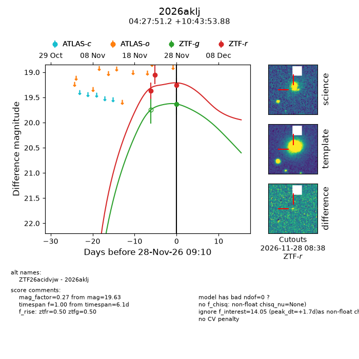
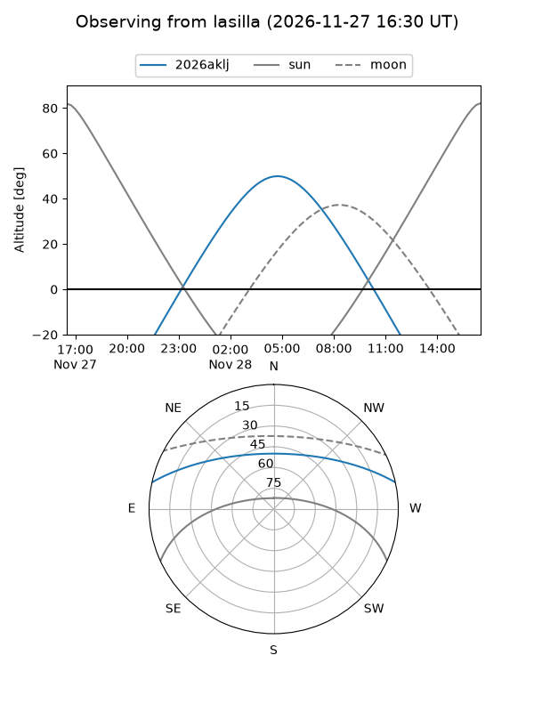
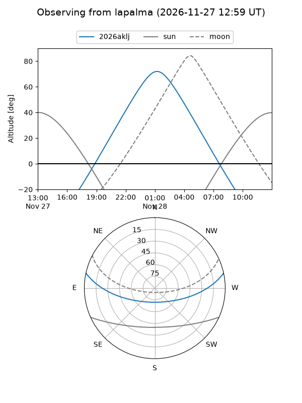
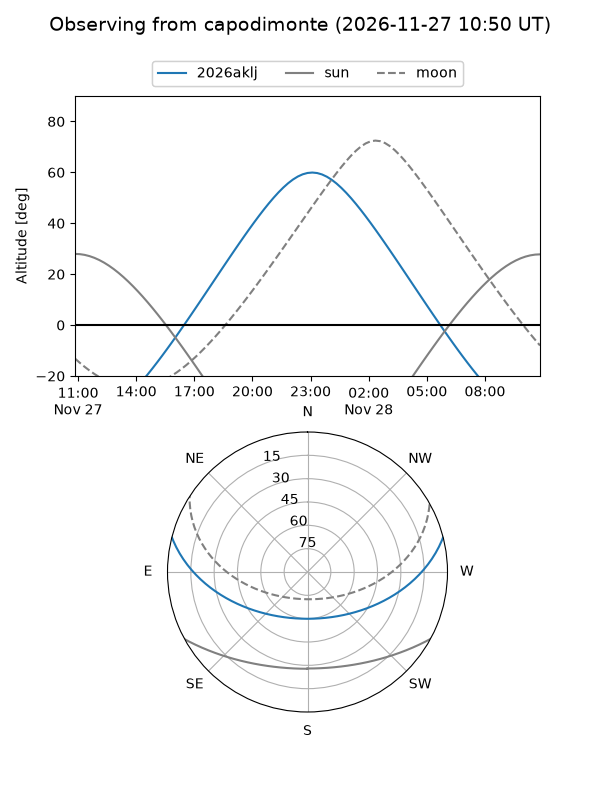
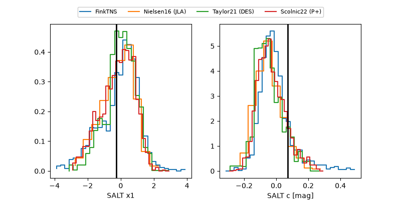

2026aklj
Target 2026aklj at 2026-11-28 09:12
Aliases and brokers:
FINK-ZTF: ztf.fink-portal.org/ZTF26acidvjw
Lasair-ZTF: lasair-ztf.lsst.ac.uk/objects/ZTF26acidvjw
ALeRCE-ZTF: alerce.online/object/ZTF26acidvjw
YSE-PZ: ziggy.ucolick.org/yse/transient_detail/2026aklj
TNS name: wis-tns.org/object/2026aklj
Direct TNS query: direct search
alt names
ZTF26acidvjw (ztf,fink_ztf)
2026aklj (tns,yse)
Coordinates:
equatorial (ra, dec) = 66.9632,+10.73163
equatorial (HMS+DMS) = 04:27:51.16,+10:43:53.88
galactic (l, b) = (184.6405,-25.32694)
Flags:
peak dt: +1.7
Photometry:
last ztfg=19.63, ztfr=19.25
1 ztfg, 3 ztfr detections
Lightcurve

Visibility



Additional plots
